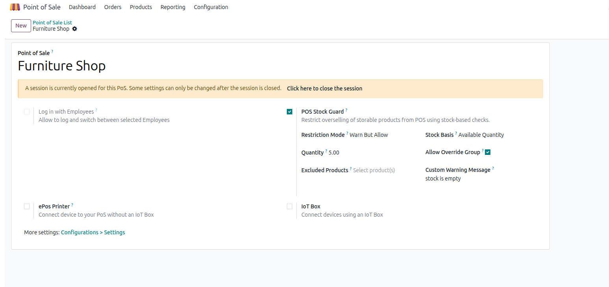

Prevent overselling in Odoo 19 Point of Sale with configurable stock controls. The module can either strictly block sales or ask for cashier confirmation when stock is below the configured limit.
Block Sale: Show blocking popup and stop action.
Warn But Allow: Show stock details and ask Do you want to continue anyway?

Managers can audit all warning/block attempts from Point of Sale > Configuration > Stock Guard Logs.
pos_stock_guard_plus